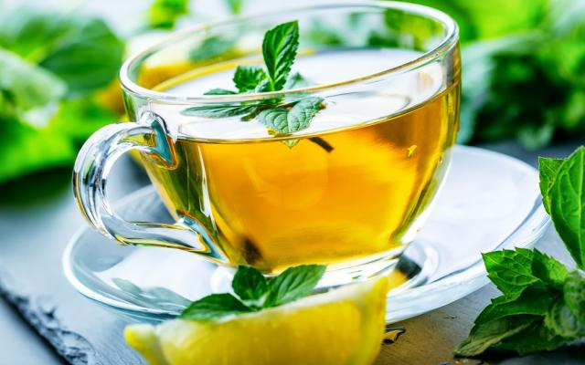

BChá de hortelã e gengibre

Chá refrescante e saudável de hortelã e gengibre
Esta receita é ótima para acompanhar um bom bolo de maçã ou para substituir a cafeína no seu dia a dia.
Ingredientes
- 2 xícaras de água.
- 1/2 xícara de hortelã.
- 1 colher de chá de gengibre ralado.
Modo de preparo
- Ferva a água durante 5 minutos.
- Apague o fogo e acrescente o gegibre e a hortelã. Deixe por mais 5 minutos tampada.
- Coe os ingredientes e sirva. Voilà!
- Se desejar, adoce com mel.